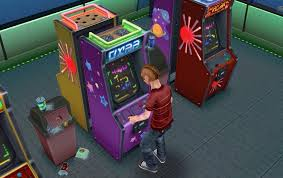
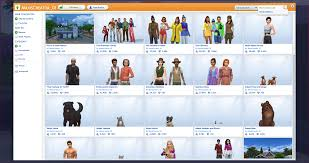

메타게임이란 무엇인가?
수학 그 자체에 관해 다루는 것이 메타수학이고, 논리 그 자체에 관해 다루는 것이 메타논리이듯이, 메타게임은 게임 그 자체를 게임 속 요소로 다루는 일종의 미장아빔(Mise en abyme)과 같은 개념의 게임이라고 정의할 수 있다. 한마디로 표현하자면 "게임으로 하는 게임"인 것이다.
(이미지 출처: Amino: https://aminoapps.com/c/video-games/page/blog/arcade-games-within-other-games/zrSx_uD71WY3kqQneNkn1pQ7BWYgRw)
메타게임은 이론적으로 이해하기는 참으로 어렵지만, 몇가지 예시들을 보다 보면 개념이 쉽게 와닿는 것을 느낄 것이다.
대표적인 메타게임의 예로는 게임대회(예: 스타 리그, 바둑 대전, 테트리스 토너먼트)가 있다. 게임을 단편적으로만 즐기고 끝내 버리는 대신에, 게임을 이용하여 서로간에 끊임없는 경쟁을 하며 정상을 향해 나아가는 과정은 그 자체가 "게임으로 하는 게임" 이라고 해석될 수 있다.

(이미지 출처: Engadget: https://www.engadget.com/2018/07/19/esports-summer-overwatch-fortnite-league-legends-pro-gaming-schedule/)
또다른 예로는 게임 커뮤니티가 있다. 길드, 팸, 동호회, 카페, 블로그, 게시판, 이미지보드 등의 다양한 커뮤니케이션 장소들이 다 이 범주에 포함된다고 보면 된다. 특정 게임 커뮤니티의 멤버들은 단순히 게임을 즐길 뿐만 아니라, 게임 속 리소스, 공략, 이스터에그, 또는 자기 자신의 게임 속 성취물을 서로 공유하며 일종의 "부드러운 경쟁"을 한다.
여기서 말하는 부드러운 경쟁이란 게임대회처럼 유저들이 게임 상에서 편가르기를 한 채 대결하는 것 대신에, 서로의 창작물이나 플레이 방식을 비교해 가며 누가 더 다채롭게 게임을 다루는지를 두고 경쟁하는 걸 의미한다.
(이미지 출처: The Sims Forums: https://forums.thesims.com/en_US/discussion/945611/gallery-problem)
예컨대 어떤 이들은 게임 속 아이템 및 캐릭터를 자체적으로 수정/제작해 창의성을 뽐내고, 또 어떤 이들은 게임을 하면서 촬영한 스피드런(최단시간 클리어) 동영상을 남들에게 보여주며 본인의 게임실력을 뽐낸다.
게임을 파는 사람에게 있어서, 그 게임을 둘러싼 유저들 사이의 메타게임 형성은 매우 중요하다고 할 수 있다. 메타게임의 존재는 게임을 즐기는 방식에 다양성을 줌으로써, 새로운 유저의 진입장벽을 낮추어 주기 때문이다.